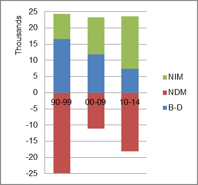

The foreign-born (FB) population increased from 275,523 in 1960 to 487,120 in 2010. That was an increase of 76.8 percent. The foreign-born share changed from 10.9 percent to 13.6 percent.
The share of the overall population that was native-born (NB) increased by 36.6 percent.
Connecticut: Population 1960-2010
The first chart below shows the three population change factors for three periods adjusted for annual average amounts. The state has steadily lost population from domestic migration (NDM). The primary factor adding population in the first two periods was B-D replaced by NIM in the most recent period.
The second chart shows the same data but with an adjustment to reflect births to immigrants shifted to NIM. In it, NIM became the primary factor adding population in all periods, becoming the sole factor adding population in the most recent period.
Connecticut: Sources of Population Change 1990-2014 Connecticut: Sources of Population Change (Adjusted) 1990-2014 
B-D NDM NIM B-D NDM NIM 90-'99 67.9% neg. 32.1% 90-'99 13.9% neg. 86.1% 00-'09 50.9% neg. 49.1% 00-'09 10.6% neg. 89.4% 10-'14 31.5% neg. 68.5% 10-'14 neg. neg. all